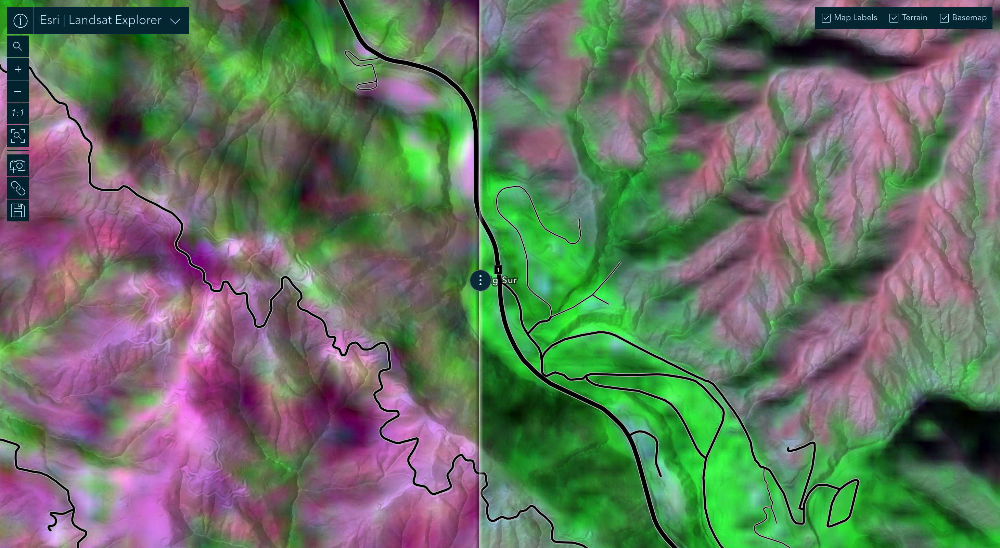
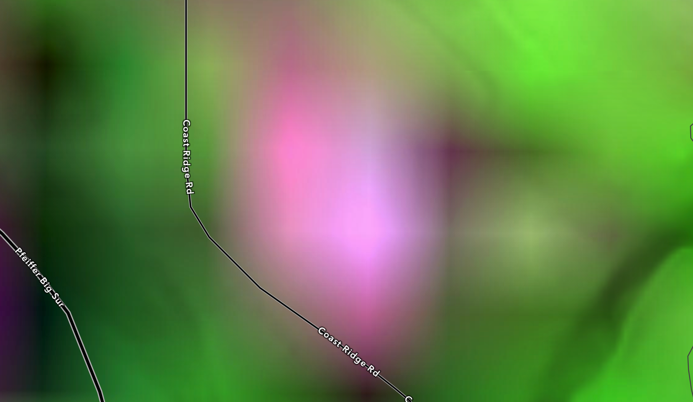
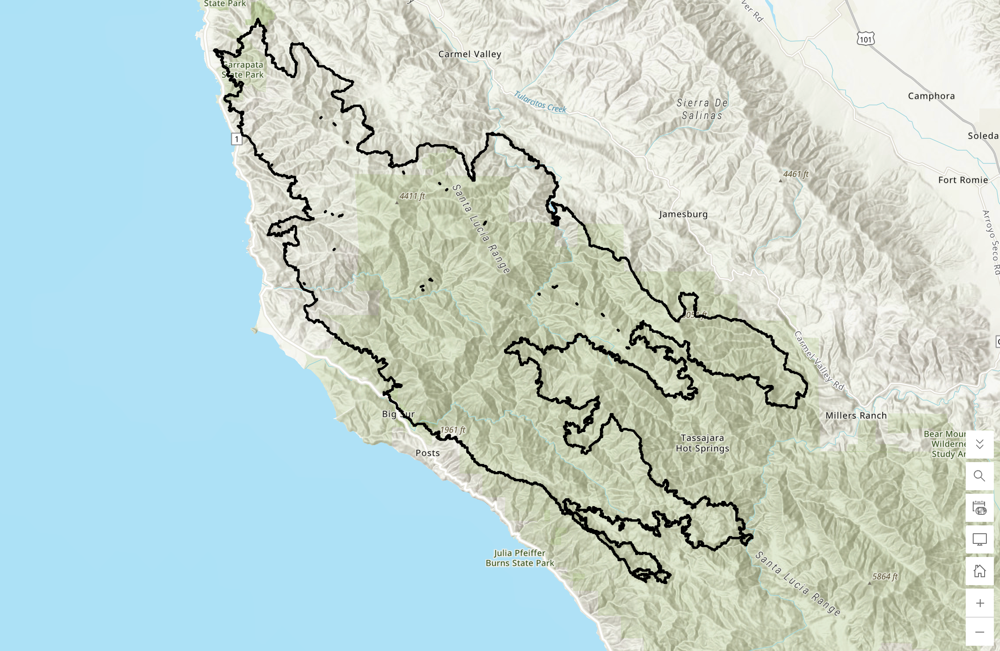
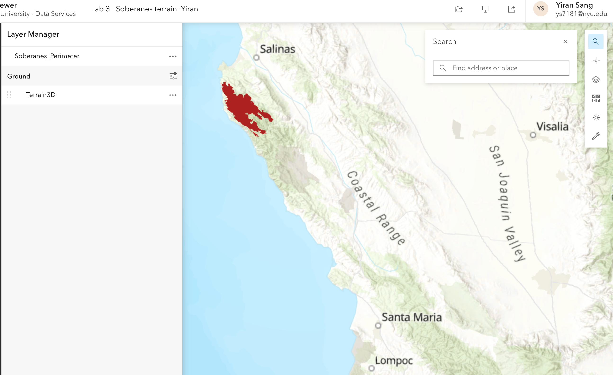
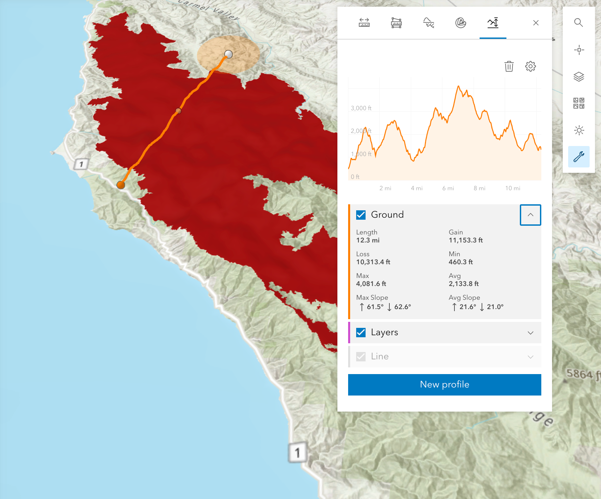
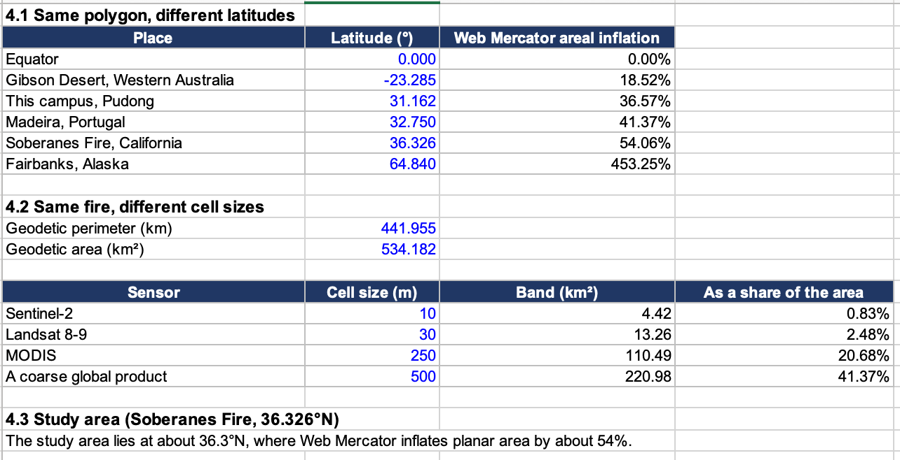
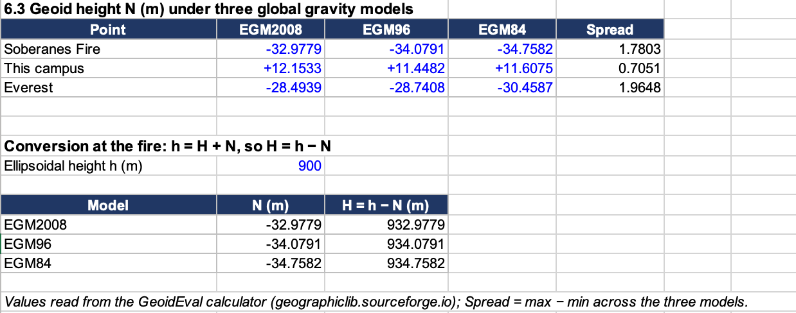

Lab 03 · October 2026
Map 3 One perimeter, three answers
The question：
How many square kilometres did the 2016 Soberanes Fire burn in Monterey County, California, and how much of that figure depends on the frame (projection, grid and terrain) in which it is measured?
The data
Burn perimeter: Soberanes_Perimeter, a hosted feature layer published by Esri's Teach_with_GIS account on ArcGIS Online Imagery: Landsat 8-9 through the Esri Landsat Explorer.
Elevation: the Esri world elevation surface, used in ArcGIS Scene Viewer.
Geoid heights: read from the GeographicLib GeoidEval calculator (EGM2008, EGM96, EGM84).
First, the coordinate system is not visible on the map, in the legend, in the pop-up or in the attribute table. It is stated only in the service definition: "wkid": 102100, "latestWkid": 3857, which is WGS 84 / Pseudo-Mercator (Web Mercator). The Shape__Area value of about 824.6 million m² is therefore the area of the fire as drawn on a Mercator sheet. Second, the single feature is not one polygon. The service delivers it as 690 rings in WGS 84 and 755 rings in Web Mercator. 686 of the 690 rings are smaller than 900 m², the area of one Landsat cell, so they cannot be observations of anything. They are what is left when a raster is traced into vectors.
The method
（1）Opened the perimeter layer in ArcGIS Map Viewer and read Shape__Area and Shape__Length from the attribute table. Then read the layer's own query endpoint (/query?where=1=1&outFields=*&returnGeometry=false&f=pjson) to find the units (esriMeters) and the spatial reference (EPSG:3857). Looked up 3857 on epsg.io.
（2）Wrote this Arcade expression in the pop-up and read the numbers it returned:
var planar = Area($feature, 'square-kilometers');
var globe = AreaGeodetic($feature, 'square-kilometers');
var acres = AreaGeodetic($feature, 'acres');
return 'planar ' + Round(planar, 3) + ' km2'
+ TextFormatting.NewLine
+ 'geodetic ' + Round(globe, 3) + ' km2'
+ TextFormatting.NewLine
+ 'geodetic ' + Round(acres, 0) + ' acres'
+ TextFormatting.NewLine
+ 'ratio ' + Round(planar / globe, 4)
+ TextFormatting.NewLine
+ 'rings ' + Count(Geometry($feature).rings);
Area() is planar, in whatever frame the stored coordinates are in (here Web Mercator). AreaGeodetic() measures on the WGS 84 ellipsoid.
（3）Traced the burn by eye with the Map Viewer measurement tool, about a dozen vertices, in 2 minutes. Map Viewer measures geodetically, so this is comparable with AreaGeodetic(). I first read it in square miles (200.30 mi²) and converted it (× 2.589988).
（4）Converted the published incident figure of 132,127 acres to km² (× 4,046.86 m² per acre).
（5）The UTM zone 10N (533.929 km²) and California Albers (534.182 km²) areas were given by the lab handout, because a layer I do not own cannot be reprojected in ArcGIS Online.
（6）Predicted the Web Mercator area inflation as sec²(φ) − 1 = tan²(φ), and computed grid uncertainty bands as geodetic perimeter × cell size (441.955 km × cell size).
（7）In Scene Viewer, draped the perimeter on the terrain and drew an elevation profile across the burn through steep ground (12.3 mi long). I read the average slope and computed the surface-area factor 1 / cos(slope) and multiplied it by the geodetic area.
（8）Read the geoid height N at the fire, at this campus and at Everest in three global models. Converted heights with h = H + N. For the fire I use EGM2008 as my reference model, because it is the most recent of the three.





A campaign would likely choose whichever map favours its own coalition — a party that wins on geography would favour Map 1, since a choropleth makes "owning more land" look like a commanding lead; a party whose support concentrates in cities would favour Map 2 or Map 4, which better reflect true population/vote weight. As the analyst, I would publish Map 4 (Cartogram) together with the full disclosure below, because it most directly encodes how much each vote weighs into visual area, rather than letting sparsely populated, land-heavy regions shout louder than their actual weight. This is defensible rather than merely convenient: it directly answers the core problem diagnosed in Part 2 — that a choropleth gives area a voice disproportionate to population — rather than being chosen simply because it looks compelling.
What I found
The planar Web Mercator area is 1.544 times the geodetic area, which is 54% of the fire invented by a projection. The geodetic measurement (533.891), the UTM zone 10N and California Albers areas (533.929 and 534.182) and the area implied by the agency's acreage (534.70) agree to within about 0.2%. The odd one out is the frame the file arrived in.
My hand trace is 2.8% below the geodetic figure with twelve vertices and no care, so the error in this workflow lives in the frame, not in the tracing. It is about twenty times larger. Where would I have found out the frame, if the lab had not told me to look? Probably never in a normal workflow. The coordinate system sits in the service definition, which the map reads on every request, but not in any of the four places a person looks (map, legend, pop-up, attribute table). The most likely moment is when my number disagrees with someone else's, and until then it would flow on into any per-hectare figure computed afterwards.

Web Mercator stretches distances by sec(φ) and areas by sec²(φ). At the fire's latitude (36.326°N), sec² = 1.5406. The measured ratio of planar to geodetic area is 1.5440. They agree to about two parts in a thousand, from one cosine and nothing else. That licenses me to say that any area I read off a web map is already wrong by a number I can compute from its latitude alone, regardless of software, polygon shape or size, so I can estimate the correction before measuring and must state the measurement frame next to every figure. My study area (the Soberanes Fire) lies at about 36.3°N, where Web Mercator inflates planar area by about 54%.
Band = geodetic perimeter (441.955 km) × cell size, as a share of the geodetic area (534.182 km²). At Landsat resolution the grid band is about 2.5% of the area and the projection error is about 54%, so the frame is more than twenty times the grid. The ranking is not general, though. It flips for a small, narrow feature mapped with a coarse sensor near the equator: for example a 500 m cell product on this same fire at 0° latitude would still carry a grid band of about 41%, while Web Mercator would add nothing.The perimeter The perimeter figure has the same frame problem plus a resolution problem. Shape__Length (Web Mercator) is 556.808 km and the geodetic length is 441.955 km, a ratio of 1.26 (and 1.26² = 1.59, close to the area ratio of 1.54; the gap exists because the fire spans a third of a degree of latitude and the boundary is not evenly spread across it). The isoperimetric ratio 4πA/P² is 0.034 (a circle gives 1). A circle of 534 km² has a circumference of about 82 km, while the file claims 442 km. My hand-traced outline has a perimeter of 97.23 mi (about 156.5 km). The three numbers are 82, 156 and 442 km for one fire, so a perimeter is not a length; it is a decision about resolution. The largest ring holds 99.986% of the area and carries about 22,800 vertices along a 380 km boundary, an average spacing of about 17 m, shorter than the 30 m cell that produced it. Generalised to the 30 m cell, the perimeter falls by about 6% while the area moves by less than a twentieth of one per cent. Area is robust to resolution and perimeter is not.
Which number would I publish? I would publish the geodetic area, 533.9 km² (about 131,900 acres), with the caption "geodetic, WGS 84 ellipsoid". It agrees with the UTM and California Albers areas and with the agency's acreage, and it is robust to the 30 m cell size (the grid band is about 2.5%). If the question is about the ground that actually burned, I would report it as a lower bound of about 572 km² of surface area, stating the slope method. I would publish the Web Mercator figure (824.3 km²) only labelled as a display-frame figure. I would publish the perimeter only with the resolution stated beside it, because the same fire has perimeters of 82, 156 and 442 km depending on how it is traced. The fire agency's figure of 132,127 acres converts to 534.70 km², which sits within about 0.15% of my geodetic acres (131,927) and right next to the geodetic, UTM and Albers rows. It is therefore most likely in a geodetic or equal-area-type frame, not in Web Mercator. To confirm it I would have to read the incident's GIS metadata or the agency's method statement for the projection and datum used.
What this does not show
（1）Resolution limit on the perimeter. The boundary was traced from a 30 m raster, so it cannot be located more precisely than one cell, and its length depends on resolution. I verified area robustness only for the main ring and only by the figure given in the lab handout.
（2）Geoid model spread. The three models differ by 0.7 to 2 m at my three points. Converting between ellipsoidal and orthometric height therefore carries an uncertainty of that size, and I use EGM2008 as my reference.
（3）Vertical datum of the scene. I did not confirm which vertical datum the Scene Viewer elevation values use (ellipsoidal or orthometric), so the profile heights in Figure 4 carry the unknown separation discussed in the geoid section.
（4）Given values. The UTM 10N and California Albers areas were supplied by the lab, not computed by me, because ArcGIS Online cannot reproject a layer I do not own.
（5）Hand trace. A single trace by one person; its 2.8% difference is a single sample, not an error estimate.